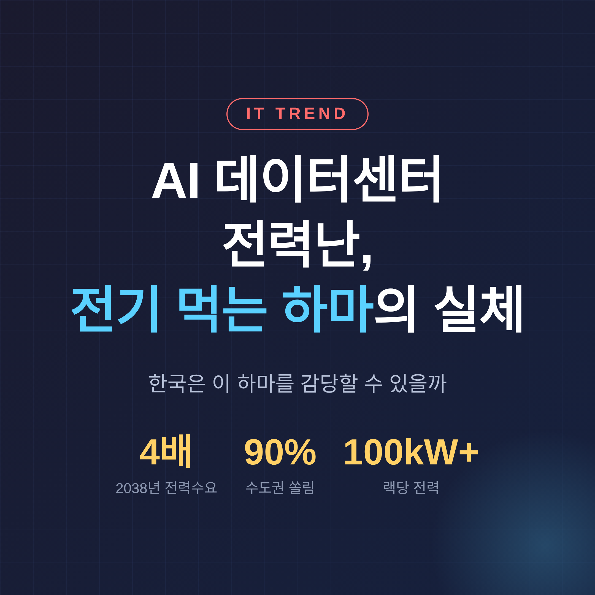
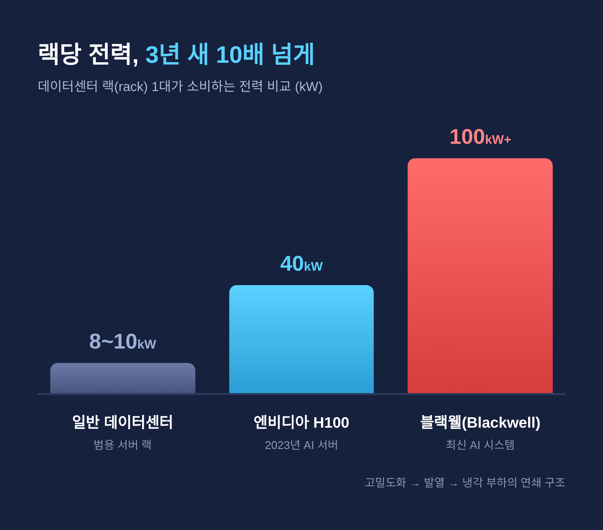
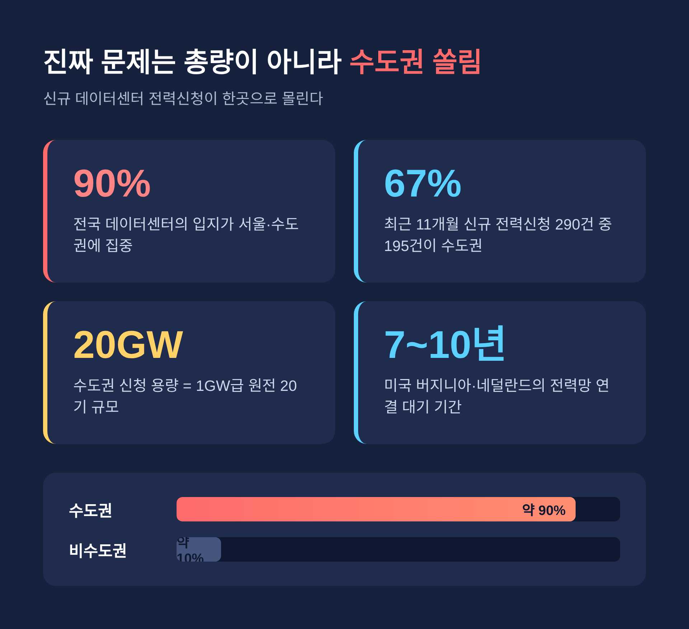
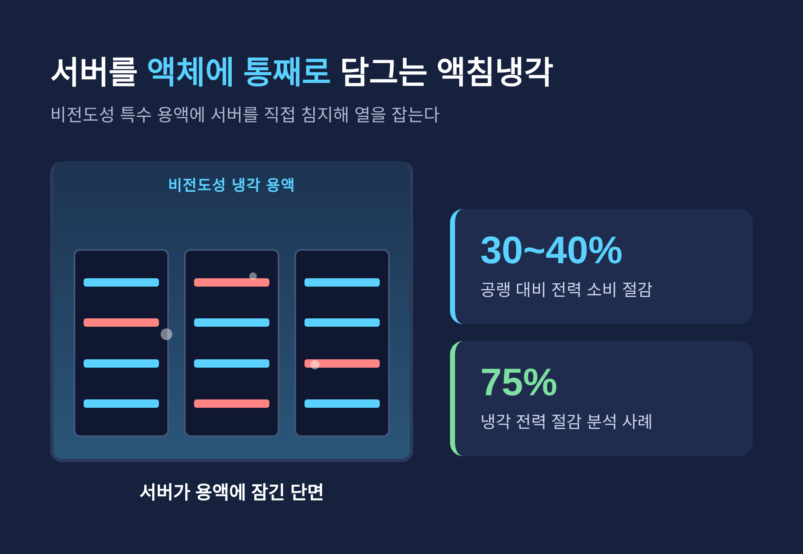

[IT] AI 데이터센터 전력난, 한국은 감당할 수 있나 — 전기 먹는 하마의 실체

이번 글에서는 AI 데이터센터 전력난을 정리해 보겠습니다.
먼저 결론부터 말씀드립니다. 국내 데이터센터 전력수요는 2023년 5TWh에서 2038년 30TWh로, 약 4배 늘어날 전망입니다. 문제는 총량만이 아닙니다. 수요가 수도권 한 곳에 쏠려 있다는 점이 더 무겁습니다. 아래에서 그 구조와 해법을 차례로 짚어 보겠습니다.
AI 데이터센터는 왜 '전기 먹는 하마'인가
핵심은 랙(rack)당 전력 밀도입니다.
기존 범용 데이터센터의 랙당 전력 밀도는 평균 8~10kW 수준이었습니다. 지금은 다릅니다. 최신 GPU 서버 랙은 50kW를 넘어 100kW, 심지어 120kW까지 도달하고 있습니다.
세대 차이도 큽니다. 2023년 엔비디아 H100 기반 AI 서버 랙은 약 40kW를 소비했습니다. 최신 블랙웰(Blackwell) 기반 시스템은 이미 100kW를 훌쩍 넘어섰습니다.
전력 폭증은 한 번으로 끝나지 않습니다. 100kW의 열을 공기로 식히려면 과도한 풍량과 팬 전력이 필요합니다. 이 냉각 부하가 다시 전력을 잡아먹습니다. 그래서 AI 데이터센터 운영은 '바람 관리'에서 '물 관리'로 넘어가고 있습니다.
정리하면 이렇습니다. AI 데이터센터의 전력난은 단순히 서버가 많아서가 아닙니다. GPU 고밀도화가 랙 전력을 키우고, 그 열이 다시 냉각 부하를 키우는 연쇄 구조입니다.

세계는 2030년 2배, 한국은 2038년 4배
가장 권위 있는 기준점은 국제에너지기구(IEA)의 『Energy and AI』 보고서입니다.
IEA 기본 시나리오에서 전 세계 데이터센터 전력 소비량은 2030년경 약 945TWh로 두 배 늘어납니다. 다만 이는 2030년 전 세계 총 전력 소비의 3% 미만에 해당합니다. 비중 자체가 압도적이지는 않은 셈입니다.
증가 속도는 가파릅니다. 2024~2030년 데이터센터 전력 소비는 연평균 약 15% 늘어, 다른 모든 부문보다 4배 이상 빠르게 증가합니다. 그중에서도 AI 특화 수요는 3배로 불어날 전망입니다.
한국은 어떨까요. 산업통상자원부 『제11차 전력수급기본계획』(2025년 2월 확정)이 공식 근거입니다.
국내 데이터센터 전력수요는 2023년 5TWh, 올해 2025년 8.2TWh, 2030년 18TWh, 2038년 30TWh로 그려집니다. 약 4배입니다.
이를 발전 설비로 환산하면 체감이 달라집니다.
- 2030년 수요를 채우려면 1GW급 원전 1.8기가 필요합니다.
- 2038년까지는 대형 원전 3기 분량을 더 지어야 합니다.
- 태양광으로 환산하면 여의도 면적의 44배를 깔아야 겨우 감당할 수 있다는 계산입니다.
다만 한 가지 단서를 달아야겠습니다. 수요 산정의 기초가 되는 한전의 '전기사용 예정 통지'가 사실상 허수라는 감사 결과가 있습니다. 그래서 이 전망치에는 상방·하방의 불확실성이 함께 있습니다. 방향은 분명하나, 숫자 자체를 못 박기는 어렵습니다.
진짜 문제는 총량이 아니라 '수도권 쏠림'
한국 전력난의 본질은 양이 부족하다는 데 있지 않습니다. 한곳에 몰려 있다는 데 있습니다.
데이터센터의 약 90%가 서울·수도권에 집중돼 있습니다(입지 기준). 운용 용량 기준으로 보면 약 73%입니다. 측정 방식에 따라 수치는 달라지지만, 쏠림이 심각하다는 결론은 같습니다.
신규 신청은 더 극적입니다. 2024년 8월부터 2025년 6월까지 약 11개월간 전국에서 데이터센터용 전력사용신청 290건이 접수됐습니다. 이 중 195건, 67%가 수도권에 몰렸습니다. 수도권 신청 용량만 약 20GW, 1GW급 원전 20기 규모입니다.

전력망은 이미 한계에 가깝습니다. 송전망 혼잡이 우려되자 정부는 '전력계통영향평가' 제도와 공급 허가 규제로 수도권 신규 건립을 사실상 억제하고 있습니다.
현장의 풍경은 이렇습니다. 수도권은 계통 포화로 신규 데이터센터가 수전 용량을 받지 못해 준공이 무기한 지연되곤 합니다. 삼성SDS가 동탄에서 20MW를 확보한 것 자체가 '수도권 전력 전쟁을 뚫었다'는 뉴스가 될 정도입니다.
이것이 한국만의 문제는 아닙니다. 미국 버지니아 북부는 전력망 연결에 평균 7년이 걸린다고 봅니다. 네덜란드는 평균 10년입니다. 아일랜드 더블린은 전력망 포화로 2028년까지 신규 데이터센터 접속 신청을 중단했습니다.
해법은 있는가 — 분산·SMR·냉각
해결의 실마리도 함께 살펴보겠습니다. 다만 어느 것도 단번에 끝내는 만능은 아닙니다.
첫째, 지역 분산배치입니다. IT 기업이 고객 수요와 지연시간을 이유로 수도권을 선호하는 것이 병목의 뿌리입니다. 인센티브로 비수도권 구축을 유도하자는 논의가 나오는 까닭입니다.
둘째, SMR(소형모듈원자로)입니다. SMR은 빠른 분산 설치와 24시간 연속 가동이 가능합니다. 데이터센터 캠퍼스 인근에 배치할 수 있어, 대규모 전력 수요에 맞습니다. 마이크로소프트·구글 같은 글로벌 빅테크가 SMR에 베팅하는 것도 같은 맥락입니다. 11차 전기본에도 SMR 1기가 신규 원전 계획에 포함됐습니다.
셋째, 냉각기술입니다. 서버를 비전도성 특수 용액에 직접 담그는 액침냉각은 공랭 대비 전력 소비를 30~40% 절감할 수 있습니다. 공랭 PUE가 약 1.50 수준인 데 비해, 액침냉각은 냉각 전력을 75%까지 줄였다는 분석도 있습니다. 국내에서도 SK엔무브가 SK텔레콤과 실증을 주도하고, 정유사들이 액침냉각유 TF를 가동하는 등 상용화가 빨라지고 있습니다.

넷째, 온사이트 전원과 스마트그리드입니다. 전력망 연계가 늦어지는 시대에는 데이터센터 자체 전원 확보가 입지 경쟁력을 가릅니다. IEA는 2030년까지 전 세계 데이터센터에 20~25GW 규모의 배터리 저장이 설치될 것으로 봅니다.
투자자의 눈으로 본다면
전력난은 누군가에게는 새로운 시장이기도 합니다.
2025년부터 데이터센터는 PC·스마트폰을 제치고 최대 메모리 수요처로 올라섰습니다. HBM3E가 AI 서버의 주력 메모리이며, HBM4로 점진적 전환이 진행되고 있습니다.
전력기기도 수혜 영역입니다. 하이퍼스케일 데이터센터의 100MW 이상 부하를 감당하려면 초고압 변압기와 대용량 송전, 지능형 배전반이 필수입니다. 여기에 신재생과 노후 전력망 교체 수요가 겹칩니다.
정유와 배터리도 변신 중입니다. 액침냉각유는 정유사의, 전력망 백업 ESS는 배터리 기업의 새 먹거리로 거론됩니다.
다만 숫자에는 신중해야 합니다. 일부 전망은 범위와 불확실성이 큽니다. 방향을 읽되, 단일 수치에 기대지는 않으시길 권합니다.
끝으로 한 마디만 더 드리겠습니다.
AI 데이터센터 전력난의 핵심은 의외로 단순합니다.
— 부족한 것은 전기가 아니라, 전기를 제때 알맞은 곳에 보내는 능력입니다.
한국이 이 하마를 감당할 수 있느냐고 물으신다면, 답은 발전소 숫자가 아니라 전력망을 어디에 어떻게 펼치느냐에 달려 있다고 말씀드리겠습니다.